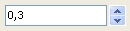

| Version: 2.9.4 |
#include </home/zeitlin/src/wx/github/interface/wx/spinctrl.h>
 Inheritance diagram for wxSpinCtrlDouble:
Inheritance diagram for wxSpinCtrlDouble:wxSpinCtrlDouble combines wxTextCtrl and wxSpinButton in one control and displays a real number.
(wxSpinCtrl displays an integer.)
This class supports the following styles:
The following event handler macros redirect the events to member function handlers 'func' with prototypes like:
Event macros for events emitted by this class:
|  | ||
| wxMSW appearance | wxGTK appearance | wxMac appearance |
Public Member Functions | |
| wxSpinCtrlDouble () | |
| Default constructor. | |
| wxSpinCtrlDouble (wxWindow *parent, wxWindowID id=-1, const wxString &value=wxEmptyString, const wxPoint &pos=wxDefaultPosition, const wxSize &size=wxDefaultSize, long style=wxSP_ARROW_KEYS, double min=0, double max=100, double initial=0, double inc=1, const wxString &name=wxT("wxSpinCtrlDouble")) | |
| Constructor, creating and showing a spin control. | |
| bool | Create (wxWindow *parent, wxWindowID id=wxID_ANY, const wxString &value=wxEmptyString, const wxPoint &pos=wxDefaultPosition, const wxSize &size=wxDefaultSize, long style=wxSP_ARROW_KEYS, double min=0, double max=100, double initial=0, double inc=1, const wxString &name="wxSpinCtrlDouble") |
| Creation function called by the spin control constructor. | |
| unsigned int | GetDigits () const |
| Gets the number of digits in the display. | |
| double | GetIncrement () const |
| Gets the increment value. | |
| double | GetMax () const |
| Gets maximal allowable value. | |
| double | GetMin () const |
| Gets minimal allowable value. | |
| double | GetValue () const |
| Gets the value of the spin control. | |
| void | SetDigits (unsigned int digits) |
| Sets the number of digits in the display. | |
| void | SetIncrement (double inc) |
| Sets the increment value. | |
| void | SetRange (double minVal, double maxVal) |
| Sets range of allowable values. | |
| virtual void | SetValue (const wxString &text) |
| Sets the value of the spin control. | |
| void | SetValue (double value) |
| Sets the value of the spin control. | |
| wxSpinCtrlDouble::wxSpinCtrlDouble | ( | ) |
Default constructor.
| wxSpinCtrlDouble::wxSpinCtrlDouble | ( | wxWindow * | parent, |
| wxWindowID | id = -1, |
||
| const wxString & | value = wxEmptyString, |
||
| const wxPoint & | pos = wxDefaultPosition, |
||
| const wxSize & | size = wxDefaultSize, |
||
| long | style = wxSP_ARROW_KEYS, |
||
| double | min = 0, |
||
| double | max = 100, |
||
| double | initial = 0, |
||
| double | inc = 1, |
||
| const wxString & | name = wxT("wxSpinCtrlDouble") |
||
| ) |
Constructor, creating and showing a spin control.
| parent | Parent window. Must not be NULL. |
| value | Default value (as text). |
| id | Window identifier. The value wxID_ANY indicates a default value. |
| pos | Window position. If wxDefaultPosition is specified then a default position is chosen. |
| size | Window size. If wxDefaultSize is specified then a default size is chosen. |
| style | Window style. See wxSpinButton. |
| min | Minimal value. |
| max | Maximal value. |
| initial | Initial value. |
| inc | Increment value. |
| name | Window name. |
| bool wxSpinCtrlDouble::Create | ( | wxWindow * | parent, |
| wxWindowID | id = wxID_ANY, |
||
| const wxString & | value = wxEmptyString, |
||
| const wxPoint & | pos = wxDefaultPosition, |
||
| const wxSize & | size = wxDefaultSize, |
||
| long | style = wxSP_ARROW_KEYS, |
||
| double | min = 0, |
||
| double | max = 100, |
||
| double | initial = 0, |
||
| double | inc = 1, |
||
| const wxString & | name = "wxSpinCtrlDouble" |
||
| ) |
Creation function called by the spin control constructor.
See wxSpinCtrlDouble() for details.
| unsigned int wxSpinCtrlDouble::GetDigits | ( | ) | const |
Gets the number of digits in the display.
| double wxSpinCtrlDouble::GetIncrement | ( | ) | const |
Gets the increment value.
| double wxSpinCtrlDouble::GetMax | ( | ) | const |
Gets maximal allowable value.
| double wxSpinCtrlDouble::GetMin | ( | ) | const |
Gets minimal allowable value.
| double wxSpinCtrlDouble::GetValue | ( | ) | const |
Gets the value of the spin control.
| void wxSpinCtrlDouble::SetDigits | ( | unsigned int | digits | ) |
Sets the number of digits in the display.
| void wxSpinCtrlDouble::SetIncrement | ( | double | inc | ) |
Sets the increment value.
| void wxSpinCtrlDouble::SetRange | ( | double | minVal, |
| double | maxVal | ||
| ) |
Sets range of allowable values.
| virtual void wxSpinCtrlDouble::SetValue | ( | const wxString & | text | ) | [virtual] |
Sets the value of the spin control.
Use the variant using double instead.
| void wxSpinCtrlDouble::SetValue | ( | double | value | ) |
Sets the value of the spin control.